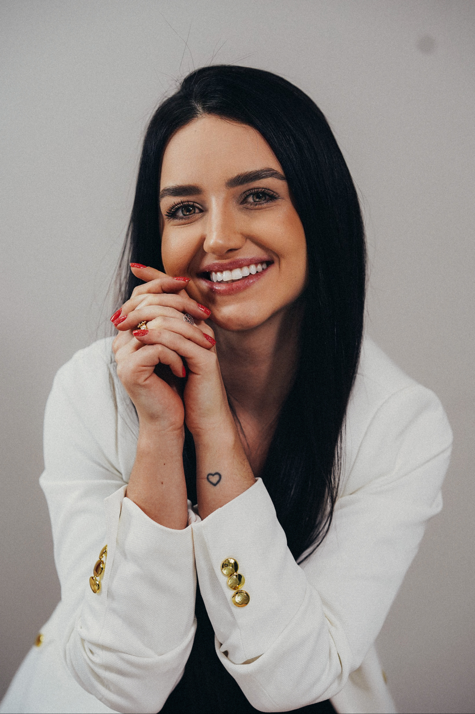
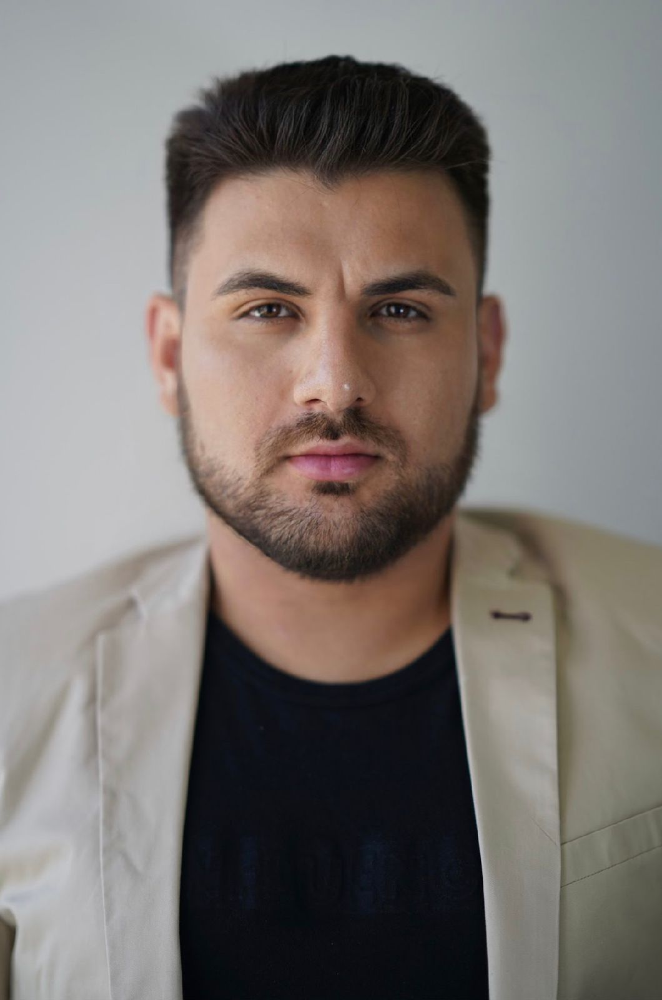
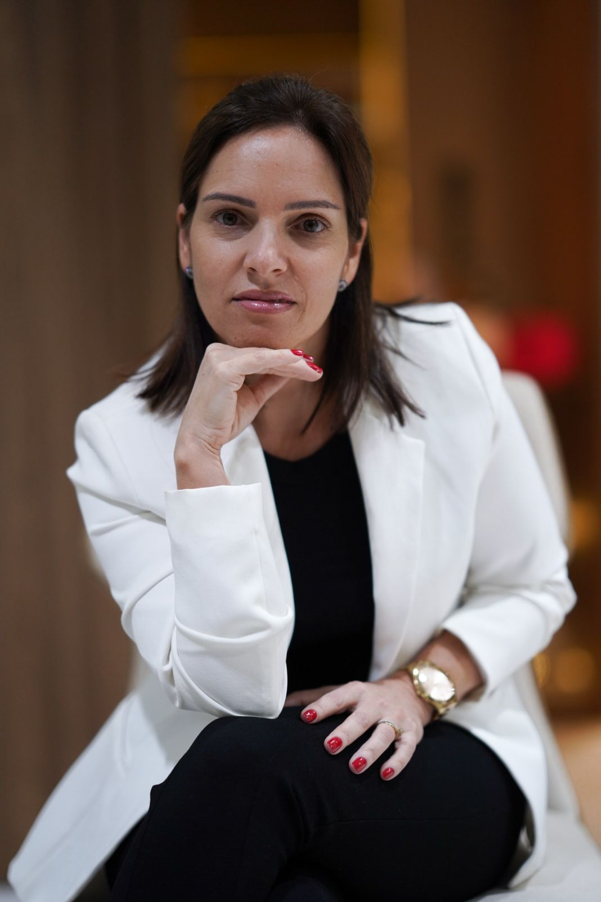
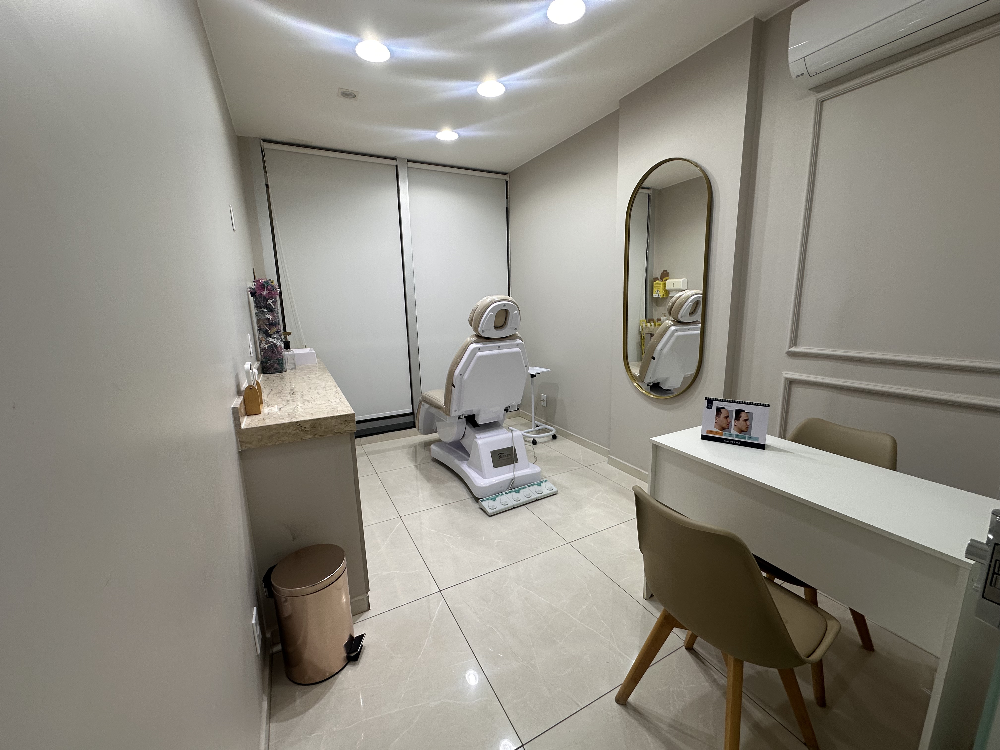

Sobre Nós
Profissionais

Dra. Luana Lisboa
Sou cirurgiã-dentista formada em 2017 pela Universidade Católica de Brasília. Ao longo da minha trajetória, em 2021, concluí a especialização em ortodontia. Apesar da importância dessa formação, percebi que não era ali que meus olhos vibravam.
Foi na harmonização facial que encontrei propósito, paixão e sentido no cuidar. Em 2022, finalizei minha residência em Harmonização Facial pelo Instituto Face Lab, consolidando uma prática baseada em técnica, naturalidade e respeito à individualidade de cada rosto.
Acredito que harmonizar vai muito além de procedimentos: é escutar, entender histórias, desejos e inseguranças. Meu diferencial está no olhar atento, no cuidado com cada detalhe e na construção de resultados que realçam a beleza sem tirar a essência de quem está na minha frente.

Dr. Otavio Maia
Sou enfermeiro, pós-graduado em Estética Avançada, com foco em tricologia e estética corporal. Atuo no cuidado capilar, auxiliando no tratamento da queda de cabelo, afinamento dos fios e na saúde do couro cabeludo, além de realizar procedimentos corporais voltados ao emagrecimento, flacidez e contorno corporal.
Tenho 7 anos de experiência em urgência e emergência como enfermeiro emergencista, o que fortalece minha prática com precisão técnica, segurança e um olhar atento a cada paciente. Minha trajetória também é marcada por vivências pessoais que ampliaram meu cuidado de forma mais humanizada, especialmente após enfrentar complicações graves por COVID-19 e pela minha história com a obesidade.
Possuo formação complementar em avaliação capilar, intradermoterapia avançada, saúde integrativa e ortomolecular, além de especialização pela Corporal Academy. Hoje, meu propósito é oferecer tratamentos seguros, personalizados e focados na autoestima, saúde e qualidade de vida.

Dra. Sheila Rodrigues
Sheila Marcos Rodrigues é enfermeira com 17 anos de experiência na área da saúde e servidora pública da Secretaria de Estado de Saúde (SES), atuando com ética, excelência e compromisso com o cuidado ao paciente.
Especialista em Harmonização Facial e Estética Avançada, possui uma abordagem segura, científica e focada em resultados naturais. Com participação em diversos congressos e certificações, mantém-se em constante atualização.
Sua principal área de atuação é a tricologia, desenvolvendo protocolos personalizados para o tratamento de queda capilar e disfunções do couro cabeludo, sempre priorizando a saúde capilar, eficácia clínica e resultados consistentes.
Acredita na estética como ferramenta de transformação, promovendo autoestima, bem-estar e segurança em cada atendimento.
Fotos da Clínica


Localização
Sobre a Empresa
A SOLT nasceu com o propósito de realçar a beleza natural por meio de cuidados
personalizados, tecnologia de ponta e um atendimento humanizado. Acreditamos que estética
vai além da aparência: é autoestima, bem-estar e confiança.
Nossa clínica oferece procedimentos modernos e seguros, sempre realizados por profissionais
qualificados, em um ambiente acolhedor e pensado para proporcionar conforto em cada detalhe.
Na SOLT, cada paciente é único — e o cuidado também.